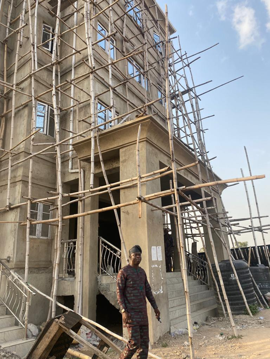

Integrity & Accountability
Transparent project commitments, decisions and delivery responsibilities.
ISSABUB Nigeria Limited delivers general construction, civil engineering, structural steel and industrial project support for residential, commercial and industrial clients.
WHY CHOOSE US
At ISSABUB, every project is approached with the same care, from residential development to industrial and civil engineering work.
Transparent project commitments, decisions and delivery responsibilities.
Attention to workmanship, materials, methods and durable results.
Safe working practices and responsible execution for people and communities.
Clear communication, dependable service and cost-conscious project management.

RECENT PROJECTS
READY TO BUILD SOMETHING THAT LASTS?
Contact ISSABUB for a site assessment and project quotation.